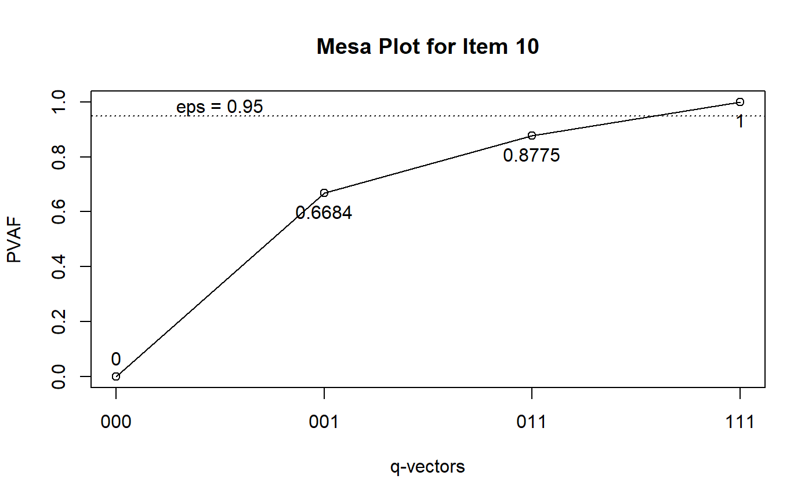
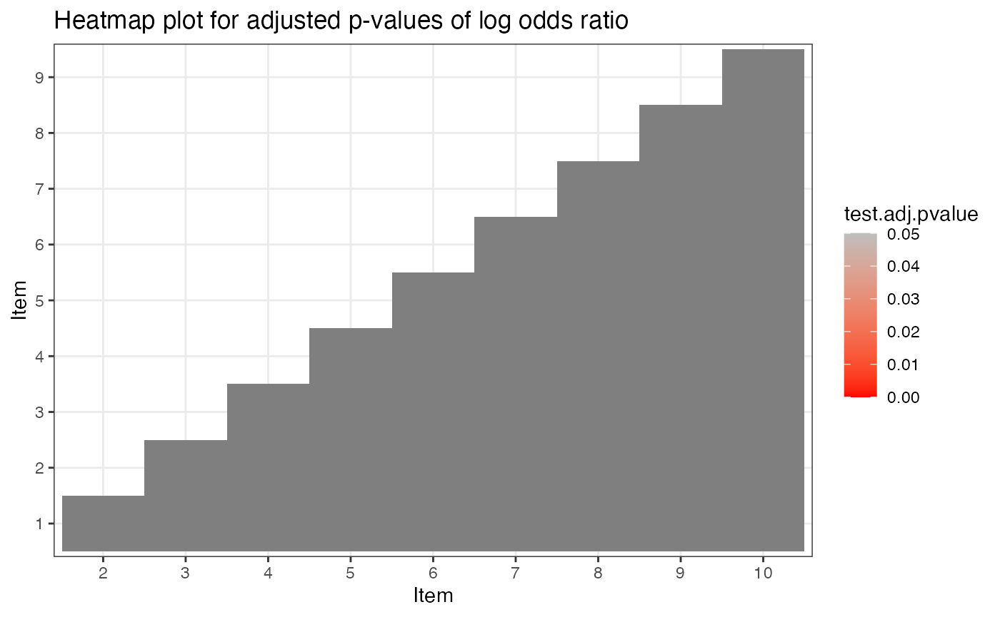
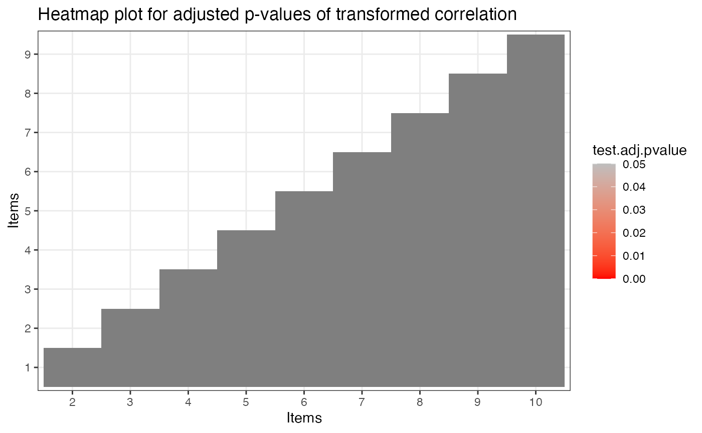

vignettes/OnlineExercises/CDMAnalysis_example.Rmd
CDMAnalysis_example.RmdThis tutorial is created using R markdown and knitr. It illustrates how to use the GDINA R pacakge (version 2.8.0) for various CDM analyses.
The following code estimates the G-DINA model. For extracting item and person parameters from G-DINA model, please see this tutorial.
library(GDINA)
## GDINA Package (version 2.8.0; 2020-05-23)
## For tutorials, see https://wenchao-ma.github.io/GDINAThe Qval() function is used for Q-matrix validation. By default, it implements de la Torre and Chiu’s (2016) algorithm. The following example use the stepwise method (Ma & de la Torre, 2019) instead.
Qv <- Qval(est, method = "Wald") Qv
##
## Q-matrix validation based on Stepwise Wald test
##
## Suggested Q-matrix:
##
## A1 A2 A3
## 1 1 0 0
## 2 0 1 0
## 3 0 0 1
## 4 1 0 1
## 5 0 1 1
## 6 1 1 0
## 7 1 0 1
## 8 1 1 0
## 9 0* 1 1
## 10 1 1* 1
## Note: * denotes a modified element.To further examine the q-vectors that are suggested to be modified, you can draw the mesa plots (de la Torre & Ma, 2016):
plot(Qv, item = 9)
plot(Qv, item = 10)

We can also examine whether the G-DINA model with the suggested Q had better relative fit:
##
## Information Criteria and Likelihood Ratio Test
##
## #par logLik Deviance AIC BIC CAIC SABIC chisq df
## est 45 -5952.73 11905.47 11995.47 12216.32 12261.32 12073.39
## est.sugQ 45 -5918.21 11836.42 11926.42 12147.27 12192.27 12004.35
## p-value
## est
## est.sugQBased on the suggested Q-matrix, we perform item level model comparison using the Wald test (see de la Torre, 2011; de la Torre & Lee, 2013; Ma, Iaconangelo & de la Torre, 2016) to check whether any reduced CDMs can be used. Note that score test and likelihood ratio test (Sorrel, Abad, Olea, de la Torre, and Barrada, 2017; Sorrel, de la Torre, Abad, & Olea, 2017; Ma & de la Torre, 2018) may also be used.
mc <- modelcomp(est.sugQ) mc
##
## Item-level model selection:
##
## test statistic: Wald
## Decision rule: simpler model + largest p value rule at 0.05 alpha level.
## Adjusted p values were based on holm correction.
##
## models pvalues adj.pvalues
## Item 1 GDINA
## Item 2 GDINA
## Item 3 GDINA
## Item 4 RRUM 0.3338 1
## Item 5 DINA 0.7991 1
## Item 6 DINO 0.8077 1
## Item 7 ACDM 0.6123 1
## Item 8 RRUM 0.32 1
## Item 9 LLM 0.9021 1
## Item 10 RRUM 0.5674 1We can fit the models suggested by the Wald test based on the rule in Ma, Iaconangelo and de la Torre (2016) and compare the combinations of CDMs with the G-DINA model:
est.wald <- GDINA(dat, sugQ, model = extract(mc,"selected.model")$models, verbose = 0) anova(est.sugQ,est.wald)
##
## Information Criteria and Likelihood Ratio Test
##
## #par logLik Deviance AIC BIC CAIC SABIC chisq df
## est.sugQ 45 -5918.21 11836.42 11926.42 12147.27 12192.27 12004.35
## est.wald 33 -5921.60 11843.20 11909.20 12071.16 12104.16 11966.35 6.78 12
## p-value
## est.sugQ
## est.wald 0.87The test level absolute fit include M2 statistic, RMSEA and SRMSR (Maydeu-Olivares, 3013; Liu, Tian, & Xin, 2016; Hansen, Cai, Monroe, & Li, 2016; Ma, 2019) and the item level absolute fit include log odds and transformed correlation (Chen, de la Torre, & Zhang, 2013), as well as heat plot for item pairs.
# test level absolute fit mft <- modelfit(est.wald) mft
## Test-level Model Fit Evaluation
##
## Relative fit statistics:
## -2 log likelihood = 11843.2 ( number of parameters = 33 )
## AIC = 11909.2 BIC = 12071.16
## CAIC = 12104.16 SABIC = 11966.35
##
## Absolute fit statistics:
## M2 = 25.976 df = 22 p = 0.2527
## RMSEA2 = 0.0134 with 90 % CI: [ 0 , 0.0308 ]
## SRMSR = 0.0222# item level absolute fit ift <- itemfit(est.wald) ift
## Summary of Item Fit Analysis
##
## Call:
## itemfit(GDINA.obj = est.wald)
##
## mean[stats] max[stats] max[z.stats] p-value adj.p-value
## Proportion correct 0.0015 0.0034 0.2188 0.8268 1
## Transformed correlation 0.0175 0.0637 2.0111 0.0443 1
## Log odds ratio 0.0788 0.2818 1.9661 0.0493 1
## Note: p-value and adj.p-value are associated with max[z.stats].
## adj.p-values are based on the holm method.summary(ift)
##
## Item-level fit statistics
## z.prop pvalue[z.prop] max[z.r] pvalue.max[z.r] adj.pvalue.max[z.r]
## Item 1 0.0540 0.9569 0.3753 0.7074 1.0000
## Item 2 0.0197 0.9843 0.6419 0.5209 1.0000
## Item 3 0.0285 0.9773 1.5448 0.1224 1.0000
## Item 4 0.0756 0.9398 2.0111 0.0443 0.3989
## Item 5 0.1639 0.8698 2.0111 0.0443 0.3989
## Item 6 0.0645 0.9486 1.5818 0.1137 1.0000
## Item 7 0.1829 0.8548 1.2494 0.2115 1.0000
## Item 8 0.2188 0.8268 1.7713 0.0765 0.6886
## Item 9 0.0217 0.9827 1.7713 0.0765 0.6886
## Item 10 0.1639 0.8698 0.7503 0.4531 1.0000
## max[z.logOR] pvalue.max[z.logOR] adj.pvalue.max[z.logOR]
## Item 1 0.3818 0.7026 1.0000
## Item 2 0.6059 0.5446 1.0000
## Item 3 1.5440 0.1226 1.0000
## Item 4 1.9661 0.0493 0.4436
## Item 5 1.9661 0.0493 0.4436
## Item 6 1.6557 0.0978 0.8801
## Item 7 1.2404 0.2148 1.0000
## Item 8 1.7499 0.0801 0.7212
## Item 9 1.7499 0.0801 0.7212
## Item 10 0.7345 0.4627 1.0000plot(ift)

The estimated latent class size can be obtained by
extract(est.wald,"posterior.prob")
## 000 100 010 001 110 101 011
## [1,] 0.1268383 0.1073741 0.1198433 0.1189953 0.1292128 0.1425195 0.1425261
## 111
## [1,] 0.1126905The tetrachoric correlation between attributes can be calculated by
# psych package needs to be installed library(psych) psych::tetrachoric(x = extract(est.wald,"attributepattern"), weight = extract(est.wald,"posterior.prob"))
## Call: psych::tetrachoric(x = extract(est.wald, "attributepattern"),
## weight = extract(est.wald, "posterior.prob"))
## tetrachoric correlation
## A1 A2 A3
## A1 1.00
## A2 -0.04 1.00
## A3 0.01 -0.03 1.00
##
## with tau of
## A1 A2 A3
## 0.021 -0.011 -0.042The following code calculates the test-, pattern- and attribute-level classification accuracy indices based on GDINA estimates using approaches in Iaconangelo (2017) and Wang, Song, Chen, Meng, and Ding (2015).
CA(est.wald)
## Classification Accuracy
##
## Test level accuracy = 0.7761
##
## Pattern level accuracy:
##
## 000 100 010 001 110 101 011 111
## 0.7630 0.6913 0.7483 0.8048 0.7644 0.8127 0.7954 0.8134
##
## Attribute level accuracy:
##
## A1 A2 A3
## 0.9010 0.8962 0.9316Chen, J., de la Torre, J., & Zhang, Z. (2013). Relative and Absolute Fit Evaluation in Cognitive Diagnosis Modeling. Journal of Educational Measurement, 50, 123-140.
de la Torre, J., & Lee, Y. S. (2013). Evaluating the wald test for item-level comparison of saturated and reduced models in cognitive diagnosis. Journal of Educational Measurement, 50, 355-373.
de la Torre, J., & Ma, W. (2016, August). Cognitive diagnosis modeling: A general framework approach and its implementation in R. A short course at the fourth conference on the statistical methods in Psychometrics, Columbia University, New York.
Hansen, M., Cai, L., Monroe, S., & Li, Z. (2016). Limited-information goodness-of-fit testing of diagnostic classification item response models. British Journal of Mathematical and Statistical Psychology. 69, 225–252.
Iaconangelo, C.(2017). Uses of Classification Error Probabilities in the Three-Step Approach to Estimating Cognitive Diagnosis Models. (Unpublished doctoral dissertation). New Brunswick, NJ: Rutgers University.
Liu, Y., Tian, W., & Xin, T. (2016). An Application of M2 Statistic to Evaluate the Fit of Cognitive Diagnostic Models. Journal of Educational and Behavioral Statistics, 41, 3-26.
Ma, W. (2019). Evaluating the fit of sequential G-DINA model using limited-information measures. Applied Psychological Measurement.
Ma, W. & de la Torre, J. (2018). Category-level model selection for the sequential G-DINA model. Journal of Educational and Behavorial Statistics.
Ma,W., & de la Torre, J. (2019). An empirical Q-matrix validation method for the sequential G-DINA model. British Journal of Mathematical and Statistical Psychology.
Ma, W., Iaconangelo, C., & de la Torre, J. (2016). Model similarity, model selection and attribute classification. Applied Psychological Measurement, 40, 200-217.
Maydeu-Olivares, A. (2013). Goodness-of-Fit Assessment of Item Response Theory Models. Measurement, 11, 71-101.
Sorrel, M. A., Abad, F. J., Olea, J., de la Torre, J., & Barrada, J. R. (2017). Inferential Item-Fit Evaluation in Cognitive Diagnosis Modeling. Applied Psychological Measurement, 41, 614-631.
Sorrel, M. A., de la Torre, J., Abad, F. J., & Olea, J. (2017). Two-Step Likelihood Ratio Test for Item-Level Model Comparison in Cognitive Diagnosis Models. Methodology, 13, 39-47.
Wang, W., Song, L., Chen, P., Meng, Y., & Ding, S. (2015). Attribute-Level and Pattern-Level Classification Consistency and Accuracy Indices for Cognitive Diagnostic Assessment. Journal of Educational Measurement, 52 , 457-476.
## R version 4.0.0 (2020-04-24)
## Platform: x86_64-w64-mingw32/x64 (64-bit)
## Running under: Windows 10 x64 (build 17763)
##
## Matrix products: default
##
## locale:
## [1] LC_COLLATE=English_United States.1252
## [2] LC_CTYPE=English_United States.1252
## [3] LC_MONETARY=English_United States.1252
## [4] LC_NUMERIC=C
## [5] LC_TIME=English_United States.1252
##
## attached base packages:
## [1] stats graphics grDevices utils datasets methods base
##
## other attached packages:
## [1] psych_1.9.12.31 GDINA_2.8.0
##
## loaded via a namespace (and not attached):
## [1] xfun_0.13 lattice_0.20-41 colorspace_1.4-1
## [4] vctrs_0.2.4 htmltools_0.4.0 yaml_2.2.1
## [7] rlang_0.4.5 pkgdown_1.5.1 later_1.0.0
## [10] pillar_1.4.3 nloptr_1.2.2.1 glue_1.4.0
## [13] lifecycle_0.2.0 stringr_1.4.0 munsell_0.5.0
## [16] gtable_0.3.0 memoise_1.1.0 evaluate_0.14
## [19] labeling_0.3 knitr_1.28 fastmap_1.0.1
## [22] httpuv_1.5.2 parallel_4.0.0 Rcpp_1.0.4.6
## [25] xtable_1.8-4 promises_1.1.0 backports_1.1.6
## [28] scales_1.1.0 desc_1.2.0 truncnorm_1.0-8
## [31] alabama_2015.3-1 mime_0.9 farver_2.0.3
## [34] fs_1.4.1 mnormt_1.5-7 ggplot2_3.3.0
## [37] digest_0.6.25 stringi_1.4.6 shiny_1.4.0.2
## [40] numDeriv_2016.8-1.1 grid_4.0.0 rprojroot_1.3-2
## [43] tools_4.0.0 magrittr_1.5 Rsolnp_1.16
## [46] tibble_3.0.1 crayon_1.3.4 pkgconfig_2.0.3
## [49] MASS_7.3-51.5 ellipsis_0.3.0 shinydashboard_0.7.1
## [52] assertthat_0.2.1 rmarkdown_2.1 rstudioapi_0.11
## [55] R6_2.4.1 nlme_3.1-147 compiler_4.0.0